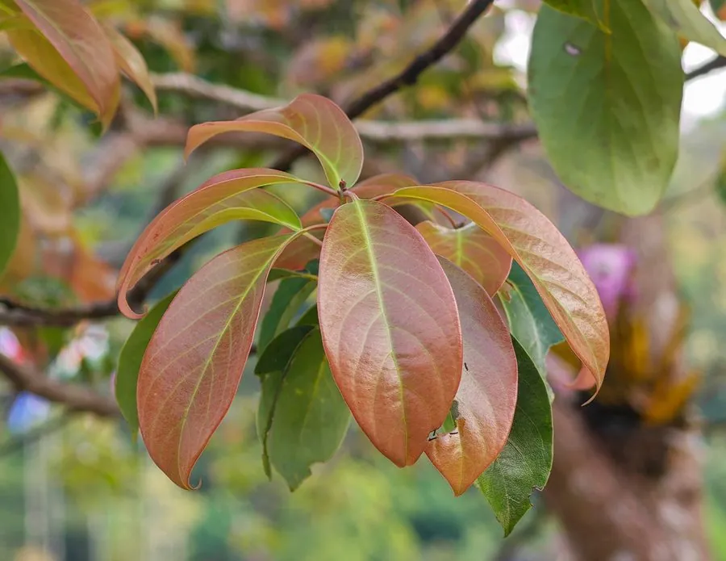

乔木 · 植物界
滇润楠 Machilus yunnanensis

樟科润楠属常绿乔木，中国特有，树冠浓密、木材细致耐腐，是滇中高原优良的用材与园林树种。
- 分类
- 门被子植物门纲木兰纲目樟目科樟科属润楠属
- 栖息环境
- 海拔 1500–2500 米的山地常绿阔叶林，喜温暖湿润、多云雾
- 地理分布
- 中国云南、四川西南部与西藏东南部，为中国特有种
- 保护级别
- IUCN 暂无评估；中国特有种，野生资源因长期采伐而下降
物种志
滇润楠为常绿乔木，高可达 30 米，树皮灰褐色，小枝绿色或黄褐色。叶片革质，倒卵形至椭圆形，长 8–15 厘米，上面深绿色有光泽，下面苍白色，羽状脉明显。圆锥花序生于枝顶或叶腋，花小、黄绿色；浆果状核果球形，成熟时紫黑色，果托杯状。
本种为中国特有种，分布于云南、四川西南部与西藏东南部，生于海拔 1500–2500 米的山地常绿阔叶林中，喜温暖湿润、多云雾的气候与深厚肥沃的酸性土壤。它是滇中高原重要的用材与园林树种，木材纹理直、结构细、耐腐，可供建筑、家具与雕刻；树冠浓密，也常作行道树与风景树。野生资源因长期采伐而下降，需加强保护与人工更新。
形态与习性
- 株高可达 30 米，树冠浓密
- 花期4–5 月，圆锥花序黄绿色
- 果期8–9 月，核果紫黑色
- 光照喜光，幼树稍耐阴
- 水分喜湿润多雾，适宜年降水量 1000 mm 以上
- 土壤深厚肥沃的酸性红壤或黄壤
- 主要用途建筑与家具用材、行道树与风景树
趣味知识
- 滇润楠属于樟科，揉碎叶片有明显的樟脑样香气，是识别润楠属的线索。
- 它的核果成熟时呈紫黑色，基部有杯状果托，常被鸟类取食。
- 滇润楠木材结构细致、耐腐，是滇中传统建筑与家具的优良用材。
- 昆明等城市常把滇润楠用作行道树，四季常绿、树冠遮阴效果好。